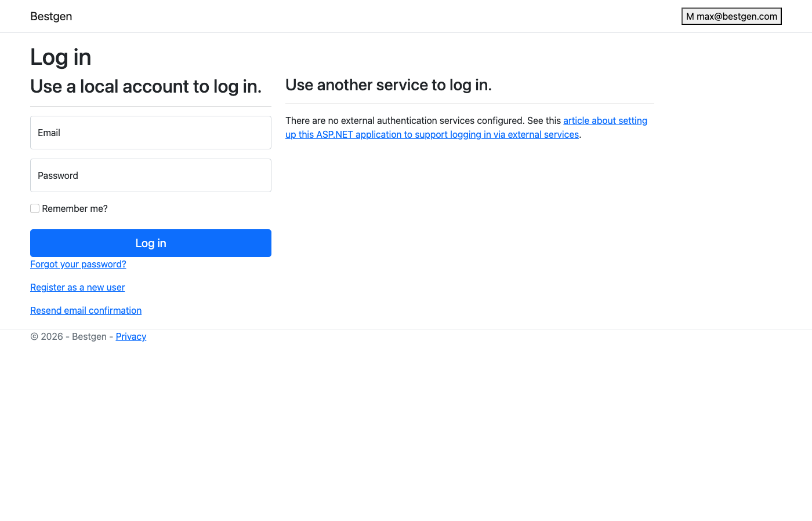
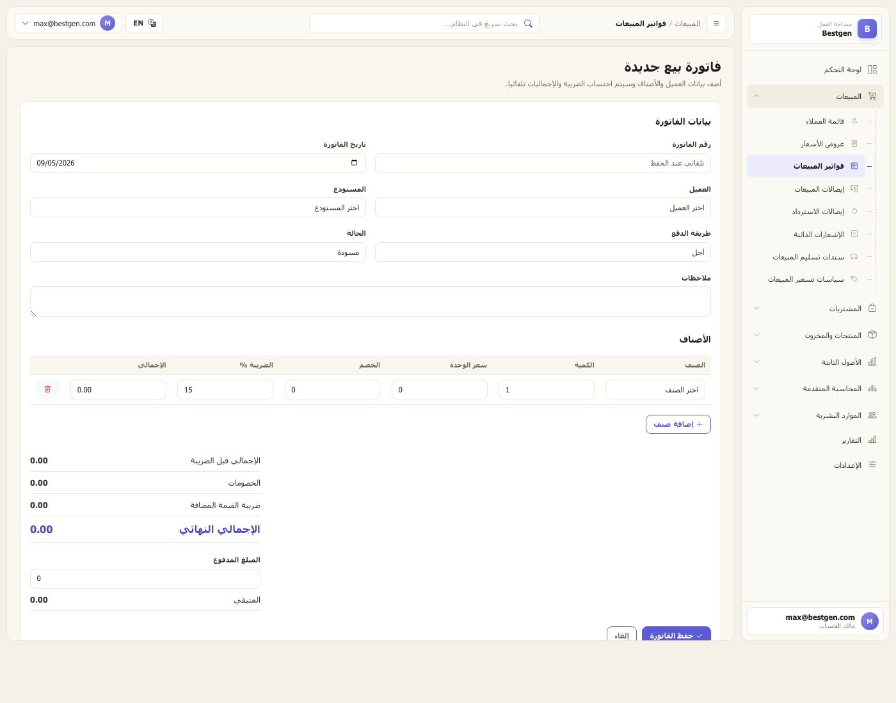
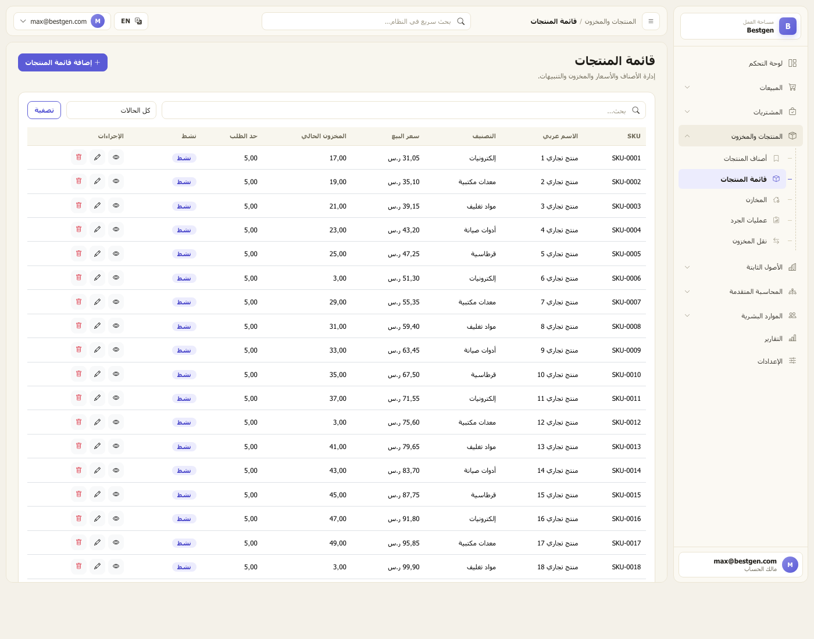
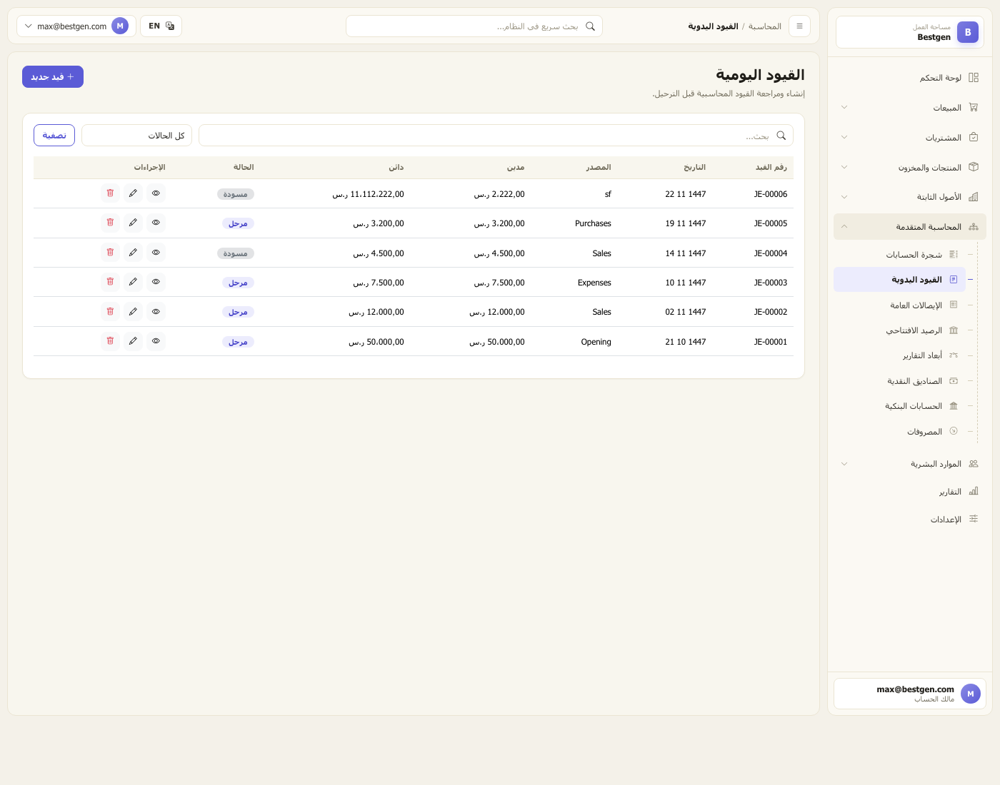
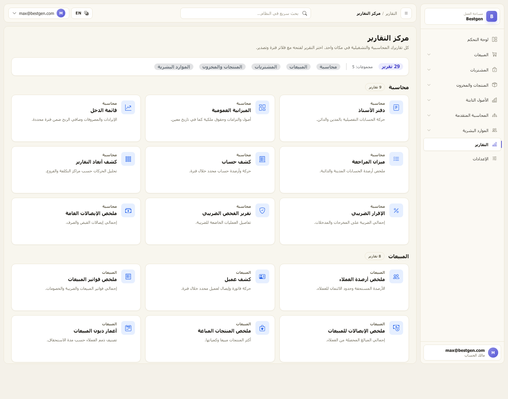
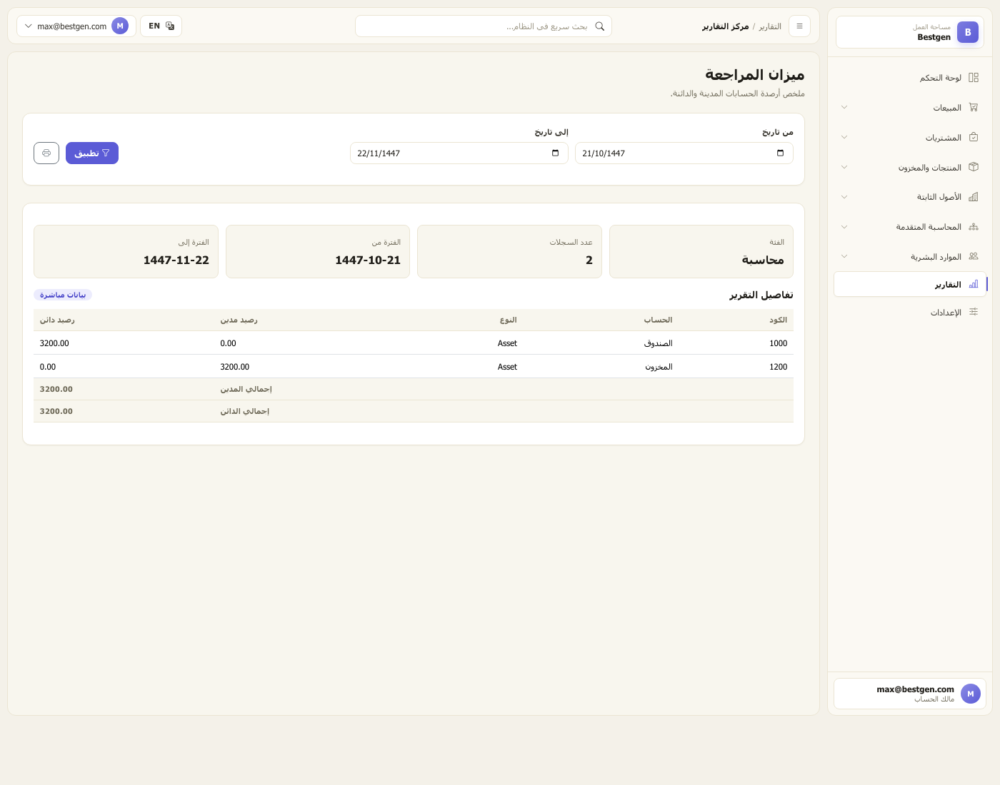

تطبيق ويب ثنائي اللغة مبني على ASP.NET Core MVC ومُصمَّم للسوق السعودي. قيود محاسبية مزدوجة، مخزون فوري، فوترة جاهزة لمعايير ZATCA، صلاحيات قائمة على الأدوار، ومركز تقارير حي مدعوم بقاعدة بيانات حقيقية.
جدول المحتويات
الملخص التنفيذي 3
الحزمة التقنية وإجراءات التشغيل 4
هندسة النظام 6
الواجهة الأمامية ونظام التصميم 9
الخدمات الخلفية ومحرك القيود 13
سجل الوحدات (الشريط الجانبي) 17
مركز التقارير 22
الإعدادات وإدارة الهوية 25
نموذج البيانات وشجرة الحسابات 27
الحالة الحالية والمتبقي من المهام 30
تشغيل التطبيق وتوصيات يومية 34
1 · الملخص التنفيذي
بيستجن منصة محاسبة ومخزون عربية مصممة لخدمة الشركات الصغيرة والمتوسطة في السوق السعودي. يُستبدل المنتج مجموعة من جداول البيانات المتفرقة وأدوات نقاط البيع المبتدئة بنظام واحد متكامل يدير دورة الأعمال كاملة — من عرض السعر إلى التسليم والفوترة والتحصيل والترحيل إلى دفتر الأستاذ — بتجربة استخدام عربية أصيلة وقواعد فوترة متوافقة مع متطلبات هيئة الزكاة والضريبة والجمارك.
⚖︎
قيود مزدوجة
كل مستند تجاري يولّد قيدًا متوازنًا تلقائيًا: لكل مدين دائن يقابله، ويُتحقق من التوازن قبل الحفظ.
📦
مخزون فوري
كل عمليات البيع والشراء والنقل والجرد تُعدِّل المخزون عبر سجل تدقيق StockMovement.
🇸🇦
تجربة عربية أصيلة
تخطيط من اليمين لليسار، خط عربي حقيقي، تسميات ثنائية، وعملات وتواريخ متوافقة مع المنطقة.
الجداول الرئيسية تعتمد على وحدة تحكم عامة CrudController<T> — إضافة كيان جديد لا تتطلب أكثر من ٥ أسطر.
أين يلائم بيستجن؟ الشركة الصغيرة التي تتبنى بيستجن تستبدل ثلاث أدوات في وقت واحد: الدفاتر اليدوية (أو ملفات Excel)، أداة المخزون المنفصلة، وعملية إصدار التقارير الجاهزة للضريبة. كل شيء في منتج واحد، بلغتين، على خادم واحد.
2 · الحزمة التقنية وإجراءات التشغيل
بيئة التشغيل
.NET 8 (الإطار المستهدف net8.0)
ASP.NET Core MVC مع صفحات Razor
C# مع تفعيل Nullable و ImplicitUsings
الفضاء bestgen · اسم التجميعة Bestgen
الاستمرارية
EF Core 8
قاعدة SQLite في الملف bestgen.db
EnsureCreatedAsync() عند الإقلاع — يُعاد إنشاء المخطط إذا حُذف الملف
يستدعي البذرة ResetPasswordAsync في كل تشغيل ليبقى تسجيل الدخول صالحًا حتى لو شُدِّدت قواعد كلمات المرور لاحقًا.
دورة حياة قاعدة البيانات
لا توجد ترحيلات (Migrations) محفوظة. يعتمد بيستجن حاليًا على EnsureCreatedAsync(). عند تعديل أي كيان، تُحذف bestgen.db ويُعاد التشغيل لإنشاء المخطط من النماذج. هذا الأسلوب مناسب للتطوير السريع ويجب استبداله بـ EF Migrations قبل الانتقال للإنتاج ببيانات عملاء حقيقية.

الشكل ١ — شاشة تسجيل الدخول. قواعد كلمات المرور حاليًا مرنة لأغراض التطوير، وستُشدَّد ضمن المرحلة ٩.
2 · هندسة النظام
توزيع المسؤوليات بين الطبقات
طبقة المتصفح تعرض صفحات Razor المُترجَمة من ASP.NET. الشريط الجانبي اليميني والشريط العلوي الثابت ولوحات النماذج كلها مشتركة بين الشاشات عبر القوالب الجزئية.
وحدات التحكم رفيعة عمدًا. تتعامل CrudController<TEntity> مع نحو ٣٠ وحدة بسيطة، فيما تحتفظ فواتير المبيعات والمشتريات والقيود والتقارير والإعدادات بوحدات تحكم مخصصة.
الخدمات تحتوي على القواعد المالية. لكل نوع مستند خدمة مخصصة تنسّق بين الحساب وحركات المخزون وقيود الأستاذ.
طبقة الاستمرارية هي DbContext واحد يكتب إلى SQLite، وتُضبَط فيه دقّة الأرقام والقيود وعلاقات المفاتيح والفهارس الفريدة.
دورة حياة عمليات الترحيل
كل وحدة معاملات تحدث تأثيرًا على الأستاذ أو المخزون تتبع نفس الدورة من ثلاث خطوات عبر مرشّحات داخل CrudController:
المرشح
متى يعمل
عقد الخدمة
BeforeCreateSaveAsync
قبل إضافة الصف لمتعقّب التغييرات
service.PrepareAsync(entity) — توليد رقم المستند والقيم الافتراضية
AfterAddBeforeSaveAsync
بعد الإضافة وقبل SaveChanges
service.PostAsync(entity) — إنشاء سطور القيد وحركات المخزون
AfterSaveAsync(entity, isCreate)
بعد إصدار المعرّف
service.ApplyAsync(entity) — إعادة احتساب رصيد الطرف
هذا النمط يضمن أن المعاملة ذرية: المستند والقيد والحركة وإعادة احتساب الرصيد إمّا أن تُحفظ معًا أو لا يُحفظ شيء.
4 · الواجهة الأمامية ونظام التصميم
الواجهة هادئة ومحترفة، تعتمد لوحة ألوان مميزة قائمة على الأزرق الكحلي والأخضر الزمردي مع مساحات بيضاء واسعة وتدرّج طباعي صارم. لا توجد أي عناصر مقتبسة من منتجات محاسبية موجودة في السوق.
شريط علوي ثابت يحوي بحث المنطقة، شريحة اللغة (AR/EN)، شريحة الوضع الداكن، وقائمة المستخدم.
عنوان الصفحة في كل شاشة عبر القالب الجزئي _PageHeader: عنوان + وصف + زر إنشاء اختياري.
شبكة المؤشرات للوحة التحكم، لوحة البيانات للجداول، لوحة النموذج للإنشاء والتعديل، لوحة التفاصيل للعرض، شبكة التقارير لمركز التقارير.
القوالب الجزئية المعاد استخدامها
_PageHeader
عنوان ووصف وزر إنشاء اختياري — في أعلى كل صفحة.
_DashboardCard
كروت المؤشرات مع خط بياني صغير ونسبة تغير شهرية.
_StatusBadge
شارة ملوّنة مرتبطة بـ EntityDisplayHelper.StatusClass.
_SearchBar
بحث وفلتر حالة وزر تطبيق فوق قوائم البيانات.
_EmptyState
رسالة ودودة حين لا توجد سجلات.
_ActionButtons
عرض/تعديل/حذف مع رمز مكافحة التزوير في الحذف.
العرض ثنائي اللغة
كل عرض يبدأ من CultureInfo.CurrentUICulture، ودالة T(en, ar) داخلية تختار الترجمة المناسبة. أسماء الحقول وعناوين الوحدات وترجمات حالات الحالة وأسماء أعمدة التقارير محفوظة في Helpers/EntityDisplayHelper.cs كقواميس ثنائية اللغة، فإضافة لغة جديدة تحتاج فقط قاموسًا إضافيًا — لا عروض جديدة.
الشكل ٢ — لوحة التحكم بنمط RTL. كل المؤشرات والرسوم البيانية مولّدة من بيانات حية في الأستاذ والمخزون.
الشكل ٣ — اللوحة نفسها بالإنجليزية LTR. التخطيط والعملات والتسميات تتقلب فورًا عند تبديل اللغة.
5 · الخدمات الخلفية ومحرك القيود
البنية الخلفية موجّهة بالخدمات: تحتفظ وحدات التحكم بالحجم الصغير وتفوّض كل المعاملات إلى خدمة مخصّصة. تشترك الخدمات في طبقة أساس صغيرة تَعبر منها كل العمليات.
خدمات الأساس
الخدمة
المسؤولية
ChartOfAccounts
المرجع الأوحد لرموز شجرة الحسابات (1000 صندوق، 1100 ذمم مدينة، 1200 مخزون، 2000 ذمم دائنة، 2100/2110 ضريبة، 4000 مبيعات، 5000 تكلفة بضاعة …). يطلق MissingAccountException إذا فُقد رمز.
StockMovementService
المسار الوحيد الذي يُعدِّل المخزون. يكتب صفوف تدقيق متزاوجة بإشارة (موجب = داخل، سالب = خارج) ومرجع نوعيّ من نوع EntityName:Id.
AccountingService
تركيب القيود والتحقق من توازنها. BuildAndAddEntryAsync(date, sourceModule, description, lines) يتأكد أن مجموع المدين = مجموع الدائن قبل الإضافة.
PartyBalanceService
إعادة احتساب رصيد العميل/المورد من المستندات الأساسية: الفواتير ناقص الإيصالات والإشعارات والاستردادات بإضافة الرصيد الافتتاحي.
InvoiceCalculationService
حساب أمامي وخلفي للإجمالي والخصم والضريبة لفواتير المبيعات والمشتريات.
DocumentNumberingService
توليد الأرقام لكل نوع مستند بقوالب ({prefix}-{yyyy}-{0000}) وإعادة سنوية وتسلسل محفوظ.
تدفق الترحيل — مثال فاتورة مبيعات
الخدمات بحسب القسم
المبيعات
SalesInvoiceService — DR ذمم مدينة، CR مبيعات + ضريبة، مع زوج تكلفة/مخزون
SalesReceiptService — DR صندوق/بنك، CR ذمم مدينة
SalesRefundReceiptService — DR مرتجع مبيعات، CR صندوق/بنك
CreditNoteService — DR مرتجع مبيعات + ضريبة، CR ذمم مدينة
DeliveryNoteService — توليد الرقم فقط
المشتريات
PurchaseInvoiceService — DR مخزون + ضريبة، CR ذمم دائنة
SupplierPaymentService — DR ذمم دائنة، CR صندوق/بنك
PurchaseRefundReceiptService — DR صندوق/بنك، CR مرتجع مشتريات
DebitNoteService — DR ذمم دائنة، CR مرتجع مشتريات + ضريبة
GoodsReceiptService — توليد الرقم فقط
عمليات المخزون
StockTransferService — حركتان متزاوجتان دون أثر محاسبي
الشكل ٤ — قائمة فواتير المبيعات بنمط RTL. تستخدم القالب العام data-panel مع _SearchBar و _ActionButtons.

الشكل ٥ — نموذج إنشاء فاتورة مبيعات متعدد البنود. يقوم SalesInvoiceService بتنسيق الحساب والمخزون والقيد في صفقة واحدة.

الشكل ٦ — قائمة المنتجات مع الكميات وأسعار البيع وحدود التنبيه.

الشكل ٧ — وحدة القيود اليدوية. كل قيد يمر عبر JournalEntryService الذي يرفض القيود غير المتوازنة قبل الحفظ.
7 · مركز التقارير
يستبدل مركز التقارير ٢٦ بطاقة وهمية كانت موجودة سابقًا بنمط موزِّع: ReportService.RunAsync(string key, ReportFilters) يعيد ReportResult موحّدًا يعرضه قالب Razor واحد. إضافة تقرير جديد لا تتطلب أكثر من حالة جديدة في switch ودالة جديدة.
التقارير الحية (المرحلة ٧ — مكتملة)
دفتر الأستاذ
كشف حركة كل حساب مع رصيد متراكم خلال الفترة.
ميزان المراجعة
مجاميع المدين والدائن لكل حساب — تأكيد توازن الدفاتر.
قائمة الدخل
الإيرادات ناقص المصروفات لأي فترة.
الميزانية العمومية
الأصول مقابل الخصوم وحقوق الملكية في تاريخ معيّن، مع نقل صافي الربح إلى الأرباح المحتجزة.
كشف حساب
حركة ورصيد أي حساب فردي.
ملخص الإيصالات العامة
إيصالات القبض والصرف مجمّعة حسب التصنيف.
كشف عميل / مورد
تاريخ المستندات لكل طرف مع رصيد متراكم.
أرصدة العملاء / الموردين
لقطة لجميع الأطراف.
أعمار الديون
تصنيف المستحقات إلى ٠–٣٠ / ٣١–٦٠ / ٦١–٩٠ / ٩١–١٢٠ / أكثر من ١٢٠ يومًا.
المخزون الحالي
الكميات والقيمة لكل مستودع.
دفتر حركة المخزون
سجل تدقيق لكل تغيير في الكميات.
الإقرار الضريبي
ضريبة المخرجات ناقص ضريبة المدخلات مع تعديلات الإشعارات.

الشكل ٨ — مركز التقارير. مجمّع كل التقارير في خمسة أقسام واضحة.

الشكل ٩ — تقرير ميزان المراجعة. مرشحات التاريخ تمر عبر ReportFilters؛ شكل الأعمدة والإجماليات موحّد عبر التقارير.
8 · الإعدادات وإدارة الهوية
تتكوّن الإعدادات من ثماني صفحات مدعومة بنماذج حقيقية (لم يتبقَّ أي صفحة وهمية).
الصفحة
ما الذي تتحكم فيه
ملف الشركة
الأسماء (AR/EN)، الرقم الضريبي، السجل التجاري، العنوان، الدولة، النسبة الضريبية الافتراضية، بادئات الفواتير، رفع الشعار.
إعدادات الضريبة
النسبة الافتراضية، الرقم الضريبي، تفعيل ZATCA، معرّف ZATCA، ظهور رمز QR.
مشروع tests/Bestgen.Tests/ بـ xUnit و EF Core In-Memory.
تغطية شاملة: فاتورة مبيعات تنشئ قيدًا متوازنًا وتخصم المخزون، فاتورة شراء + دفعة، نقل مخزون يعطي حركتين تجمعهما صفر، قفل الفترة يمنع القيود السابقة، رفض القيود غير المتوازنة، كل تقرير يطابق بيانات البذرة.
قائمة tests/SMOKE.md ٣٠ دقيقة قبل كل إصدار.
خارج النطاق (متعمَّد)
EF Migrations — نعتمد حاليًا على EnsureCreatedAsync؛ يجب الانتقال إلى ترحيلات حقيقية قبل الإنتاج.
تعدد العملات — العملة الأساسية أحادية حاليًا.
ZATCA Phase 2 clearance — البنية جاهزة (الرقم وQR) لكن التكامل الفعلي مع فاتورة على خارطة الطريق.
تعدد المستأجرين — التطبيق وحيد المستأجر بالتصميم.
11 · تشغيل التطبيق
الإقلاع لأول مرة
استنساخ المستودع ثم dotnet restore.
تشغيل dotnet run — يُنشئ ملف SQLite ويزرع الأدوار والحسابات والمستخدمين الافتراضيين والفروع وسياسات الترقيم وبيانات تجريبية.
زيارة http://localhost:5000 وتسجيل الدخول بـ max@bestgen.com / 123.
فتح الإعدادات → ملف الشركة واستبدال البيانات المزروعة بالبيانات الحقيقية ورفع الشعار.
فتح الإعدادات → المستخدمون والصلاحيات وإضافة المستخدمين بالأدوار المناسبة.
التدفقات اليومية
بيع — العملاء ← فواتير المبيعات ← جديد. السطور والضريبة والإجمالي والقيد والمخزون كلها تُحفظ معًا.
تحصيل — إيصالات القبض ← جديد. اختر العميل والصندوق/البنك.
شراء — الموردون ← فواتير المشتريات ← جديد.
دفع لمورد — دفعات الموردين ← جديد.
تسوية جرد — جرد المخزون ← جديد، ثم معتمد لينشأ قيد الفروقات.
إصدار التقارير — التقارير ← ميزان المراجعة / قائمة الدخل / الميزانية — كلها بيانات حية.
المخاطر الشائعة وكيف يحتجزها بيستجن
الخطر
الحارس المدمج
قيد غير متوازن
BuildAndAddEntryAsync يطلق استثناءً إذا اختلف المدين عن الدائن.
رمز حساب مفقود
ChartOfAccounts.ResolveAsync يطلق MissingAccountException.
تعديل المخزون خارج المسار المعتمد
لا يكتب أحد إلى Product.CurrentStock سوى StockMovementService.
رصيد طرف قديم
PartyBalanceService يعيد الاحتساب من المستندات الأساسية بعد كل عملية.
رقم مستند مكرر
فهارس فريدة على كل أرقام المستندات في OnModelCreating.
12 · خلاصة المشروع
باختصار شديد: بيستجن منتج محاسبة ومخزون متكامل، مكتوب بالعربية والإنجليزية، ومُصمَّم لاحتياجات الشركات السعودية الصغيرة والمتوسطة. يحلّ في وقت واحد ثلاث مشاكل تواجه أصحاب الأعمال يوميًا: تشتُّت الدفاتر بين أوراق Excel، صعوبة معرفة الكميات الفعلية في المستودع، والوقت الضائع في تجهيز التقارير الضريبية والمالية.
ماذا يفعل بيستجن؟
يتولى دورة الأعمال كاملة: يصدر عرض السعر، ثم الفاتورة، ثم يستلم الدفعة، ثم يخصم البضاعة من المستودع، ثم يسجّل القيد في دفتر الأستاذ — كل ذلك في خطوة حفظ واحدة.
لماذا يختلف؟
الواجهة عربية أصيلة وليست ترجمة. القيود مزدوجة بشكل صحيح. التقارير حقيقية من قاعدة البيانات وليست أرقامًا وهمية. الأمان مبني على نظام الأدوار من اليوم الأول.
مَن المستخدم المستهدف؟
المحاسب اليومي، أمين المخزن، مسؤول المبيعات، مسؤول المشتريات، ومسؤول الموارد البشرية في شركة صغيرة أو متوسطة الحجم — كل منهم يجد قسمه جاهزًا في الشريط الجانبي.
أين النضج اليوم؟
تسعة أقسام كاملة في الشريط الجانبي. تسعة أدوار. ٢٨ حسابًا في شجرة الحسابات. ١٣ تقريرًا حيًا. ٧٠ كيانًا في قاعدة البيانات. ٨ مراحل من الخطة العشرية مكتملة.
ما المتبقي قبل الإنتاج؟
ثلاث مهام أساسية: تشديد كلمات المرور وأدوار الوصول، إضافة قفل الفترة المالية، ومجموعة من الاختبارات الآلية. ثم استبدال EnsureCreatedAsync بترحيلات EF رسمية قبل أول عميل حقيقي.
لمَن يصلح الآن؟
للشركات التي تريد تشغيله داخليًا أو على خادم خاص. عند الانتهاء من المرحلتين ٩ و ١٠ سيكون جاهزًا للنشر التجاري على عملاء حقيقيين.
الخلاصة بأبسط صورة: بيستجن وصل إلى مرحلة منتج عامل بكل وحداته الأساسية. كل عملية تحفظها في النظام تنعكس فورًا على القيود وعلى المخزون وعلى رصيد الطرف، ويمكن استخراج تقارير محاسبية ومخزنية حقيقية في أي وقت. ما تبقى هو طبقة التحصين النهائية قبل التسليم الإنتاجي — وليس بناء المنتج من جديد.